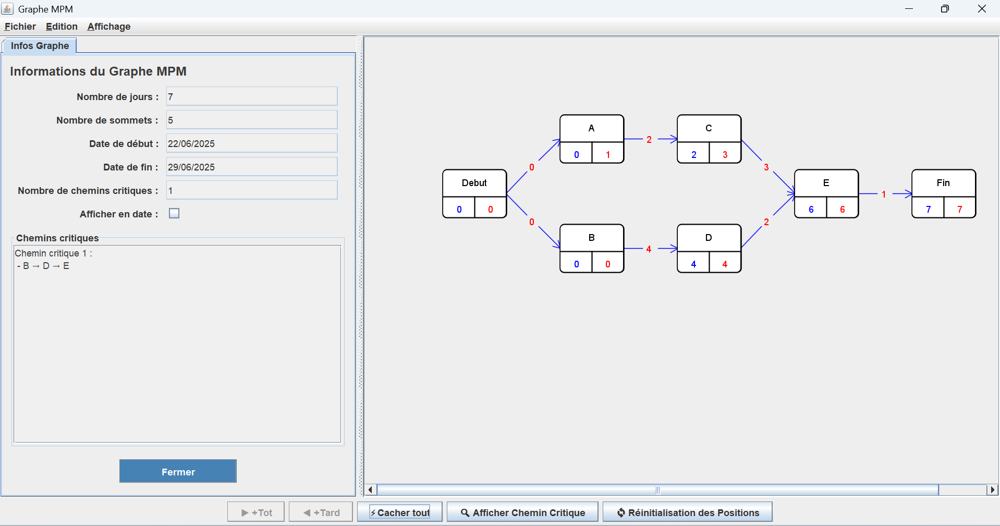

Lors de la SAE 1.05 consistait à concevoir un site web pour le BDE en suivant les principales phases d’un projet :
recueil du besoin via une réunion avec les enseignants (client) et un questionnaire destiné aux étudiants (usagers),
rédaction d’un cahier des charges, conception et développement du site, puis présentation finale.
Notre équipe faisait office de maître d’ouvrage en traduisant les besoins exprimés, et de maître d’œuvre en assurant
la réalisation technique. Ce projet m’a permis de mieux comprendre la distinction entre client, usager, MOA et MOE, et de
mettre en œuvre une organisation structurée autour de ces rôles.
Lors de la SAE 2.01, j'ai développé une application Java de gestion de graphe MPM, j’ai choisi d’utiliser une pile
pour trouver les chemins critiques du graphe car cela rendait l’algorithme plus facile à écrire et à comprendre.

Le cahier des charges est un document rédigé en amont du projet, qui formalise les besoins du client ou du commanditaire.
Il décrit les objectifs, les fonctionnalités attendues, les contraintes techniques, les normes à respecter, les livrables,
les délais et le budget. Il répond à la question : "Qu’est-ce qu’on doit faire ?" C'est ce que nous analyser en amont
pour le début de chaque projet.
Le dossier de gestion de projet est un document interne à l’équipe projet, qui sert à organiser et piloter la réalisation
du projet. Il contient le planning, la répartition des tâches, les outils utilisés, les points de suivi, les risques identifiés,
les ajustements, etc. Il répond à la question : "Comment va-t-on s’y prendre pour le faire ?" C'est ce que nous avons formalisé
pour l'élaboration et la réalisation de la SAE 2.06.
{kind=link}